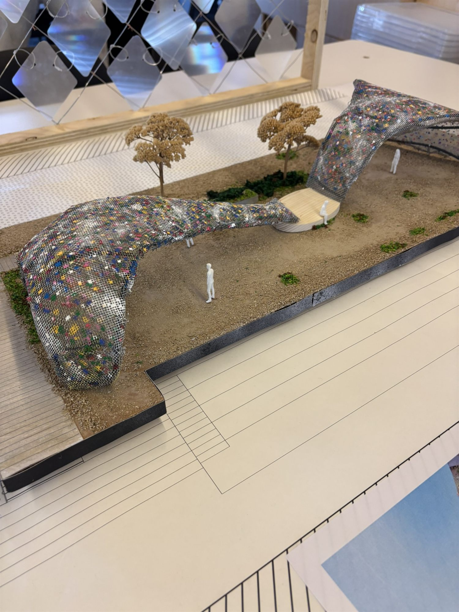

Projets racontés
Design
Ici, je vous partage mes travaux de design, explorés projet par projet, à travers différents domaines et approches !
Vous trouverez ici des projets aux styles et aux objectifs différents, témoignant de ma volonté d’explorer le design sous plusieurs angles, tout en accordant une attention particulière aux détails, à la cohérence visuelle et à l’expérience.
Les projets
Index
01La cour des grands
Une cour dans l'ombre et très ventée : comment lui rendre de la lumière ? Croquis, maquette au 1:50, pétales qui bougent avec le vent.
Lire le projet →
Domaine à venir
Prochain projet
Cette place attend son projet.
Domaine à venir
Prochain projet
Cette place attend son projet.
Dernière mise à jour : 21 septembre 2026